Istruttrice cinofila etologico-comportamentale
Imparare ad ascoltare ciò che il cane sta già dicendo.
Percorsi con Valentina per osservare il cane nel suo modo di essere, comprendere meglio la relazione e costruire esperienze che abbiano senso nella vita quotidiana.
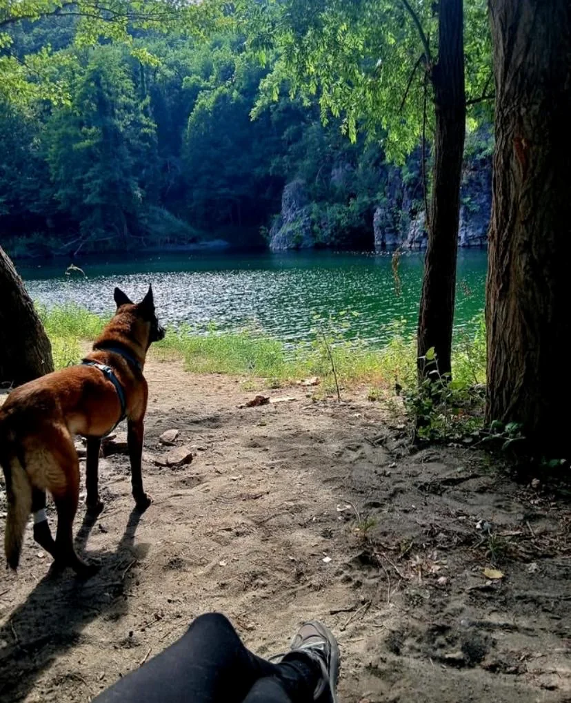
«Il mio lavoro non è insegnare al cane a essere umano.»
ValentinaI percorsi e le attività
Esperienze diverse, unite dallo stesso sguardo.
Ogni proposta parte dal contesto, dalle caratteristiche del cane e dalla relazione con la sua persona. Le pagine di dettaglio aiutano a capire come si svolgono e quale può essere il primo passo.
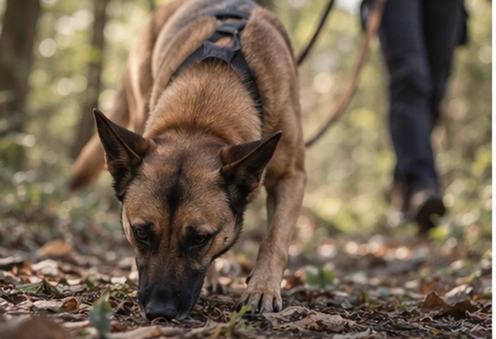
01Natura · olfattoRicerca su tracciaDare spazio al naso del cane e imparare a seguirne ritmo, soste e scelte lungo una pista.Approfondisci →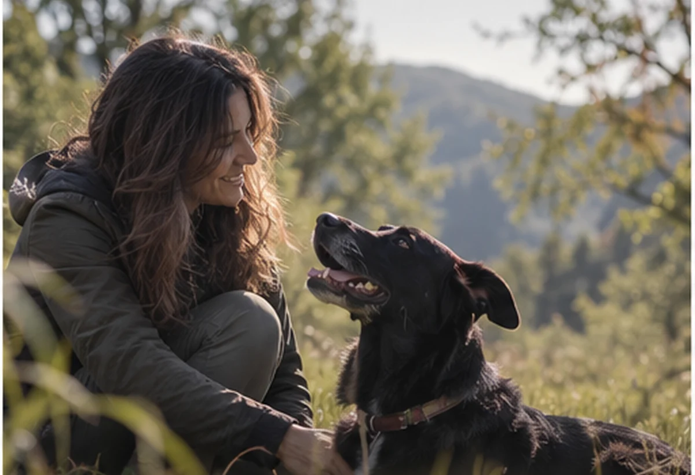
02Natura · gruppoClassi di comunicazione in naturaContesti guidati in cui osservare distanze, segnali e interazioni in uno spazio naturale.Approfondisci →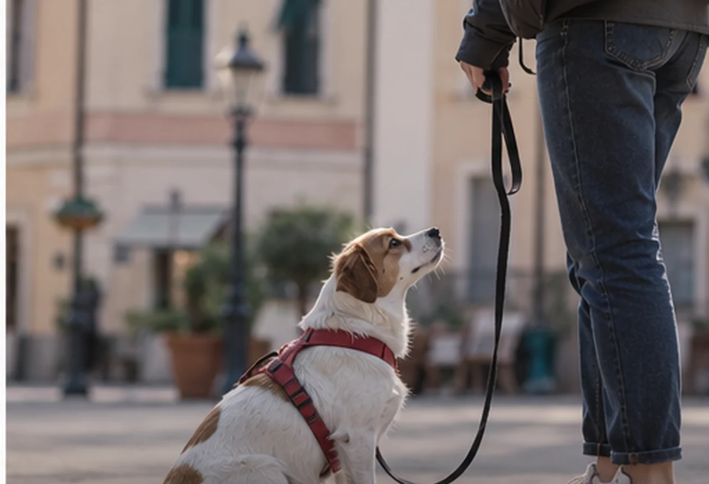
03Città · gruppoClassi di comunicazione in cittàLeggere ciò che accade tra cane, persona e ambiente dentro situazioni quotidiane.Approfondisci →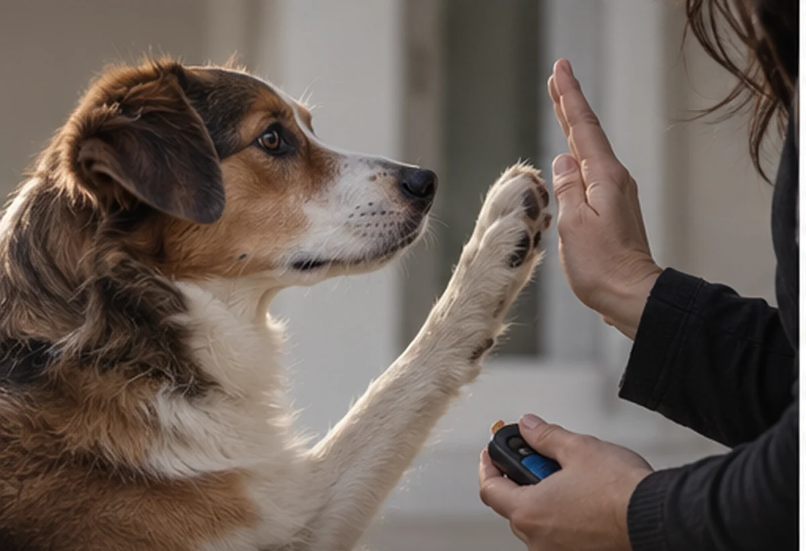
04Su misuraPercorsi individualiUn lavoro costruito sul singolo cane, sulla sua persona e sul contesto in cui vivono.Approfondisci →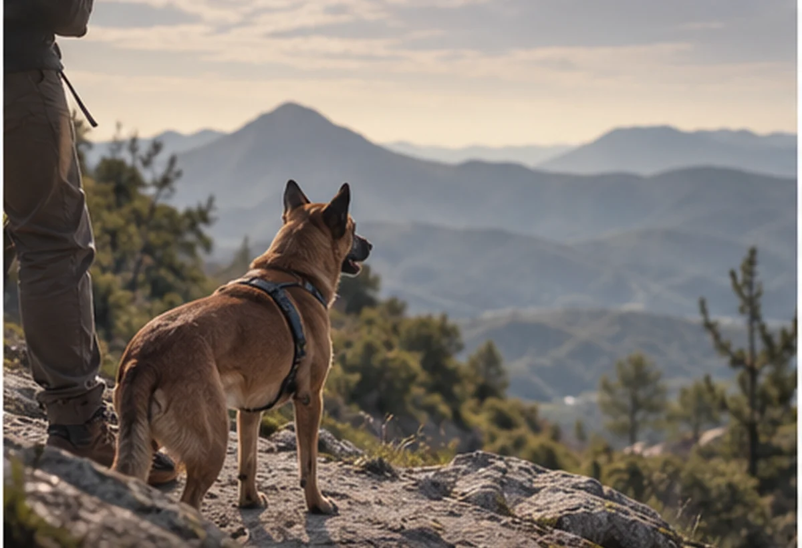
05Cammino · naturaTrekking educativoCamminare insieme, facendo di ritmo, distanze, soste e ambiente parte dell’esperienza.Approfondisci →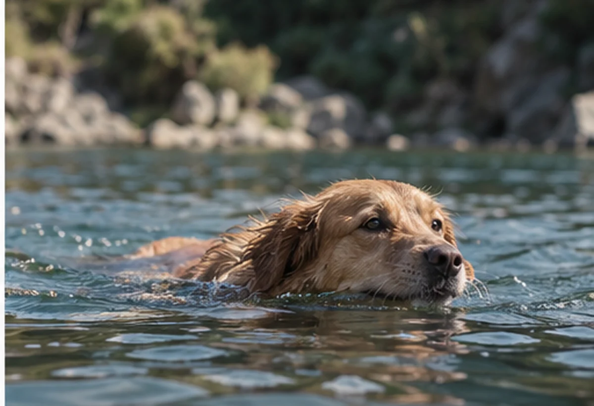
06EsplorazioneEsperienze in acquaAvvicinarsi all’acqua rispettando caratteristiche, scelte e tempi del singolo cane.Approfondisci →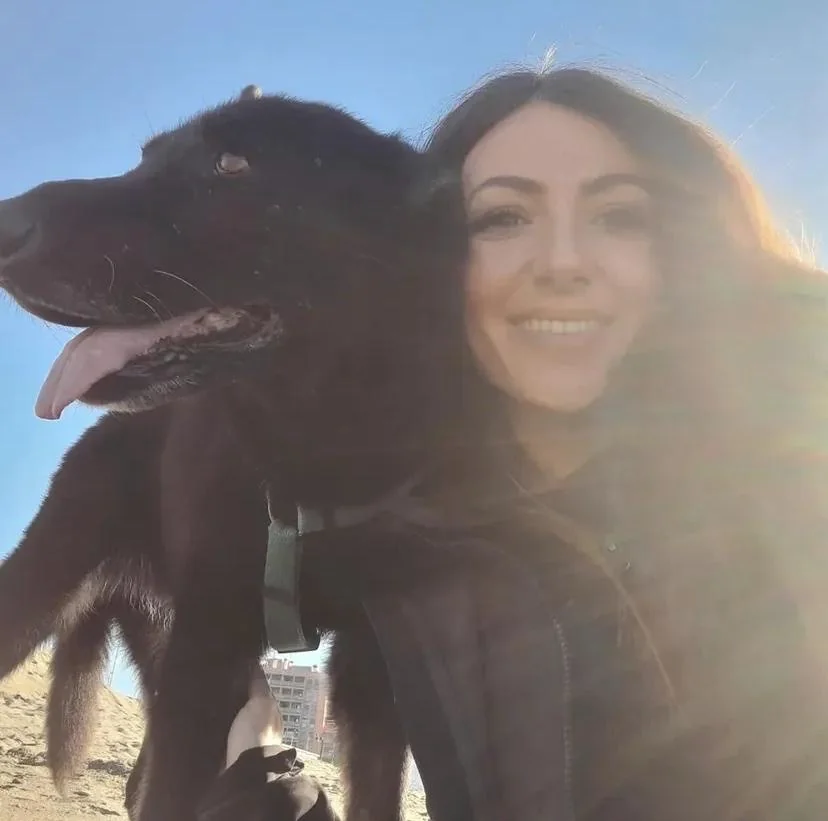
Chi sono
Sono Valentina.
Dal 2008 lavoro con le persone e i loro cani, in presenza, a domicilio e online. Il punto di partenza non è insegnare al cane a essere più simile a noi, ma osservare ciò che comunica e aiutare la persona a cambiare prospettiva.
«Non si tratta solo di trovare un linguaggio comune. Si tratta di imparare ad ascoltare ciò che il cane sta già dicendo.»
Metodo di lavoro
Prima di cercare una risposta, si osserva la domanda.
Non esiste una sequenza identica per tutti. Il percorso prende forma a partire dal cane, dalla persona, dall’ambiente e da ciò che sta accadendo davvero.
- 01
Ascolto del contesto
Il primo confronto serve a capire la situazione, le abitudini, le difficoltà percepite e ciò che vorresti approfondire.
- 02
Osservazione del cane e della relazione
Si leggono comunicazione, distanze, scelte e risposte al contesto, senza partire da una soluzione preconfezionata.
- 03
Esperienze coerenti
Attività e strumenti vengono scelti in funzione di ciò che emerge, dei tempi del cane e degli obiettivi condivisi.
- 04
Continuità nella quotidianità
Quanto osservato durante gli incontri trova spazio nella vita di tutti i giorni, con verifiche e adattamenti nel tempo.
Modalità
Il lavoro si adatta al contesto.
La modalità viene concordata dopo il primo contatto, in base alla richiesta e al tipo di percorso.
- 01
In presenza
Incontri individuali e attività programmate tra natura e città.
- 02
A domicilio
Quando osservare il cane nella sua quotidianità offre informazioni utili.
- 03
Online
Un confronto a distanza quando questa modalità è adeguata alla richiesta.
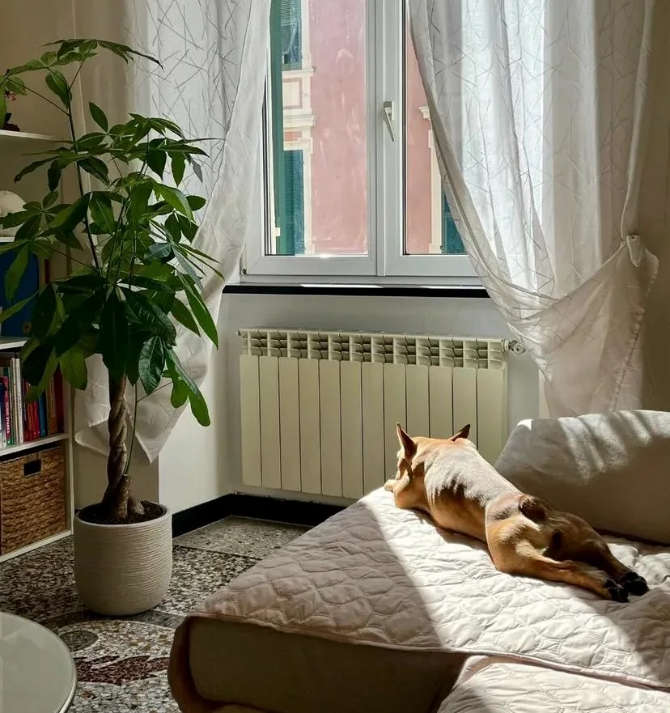
Dove lavoro
Da Pontinvrea, tra natura,
città e quotidianità.
Il luogo cambia insieme all’esperienza. La fattibilità viene verificata in base alla zona e alla richiesta.
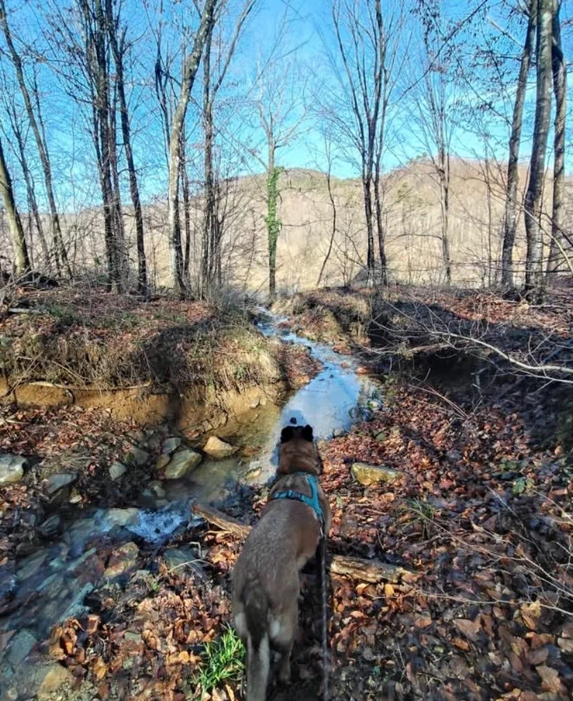
01
Pontinvrea
Punto di riferimento dell’attività e delle proposte sul territorio.
Dettagli →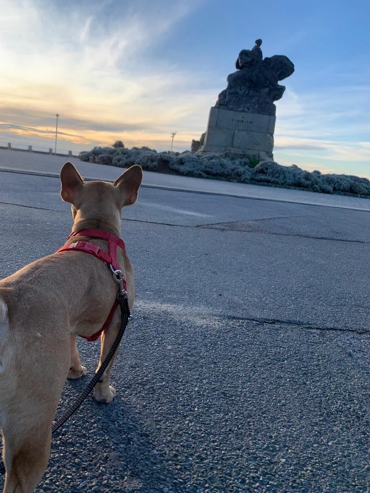
02
Savona
Uno dei contesti di riferimento per le attività in ambiente urbano.
Dettagli →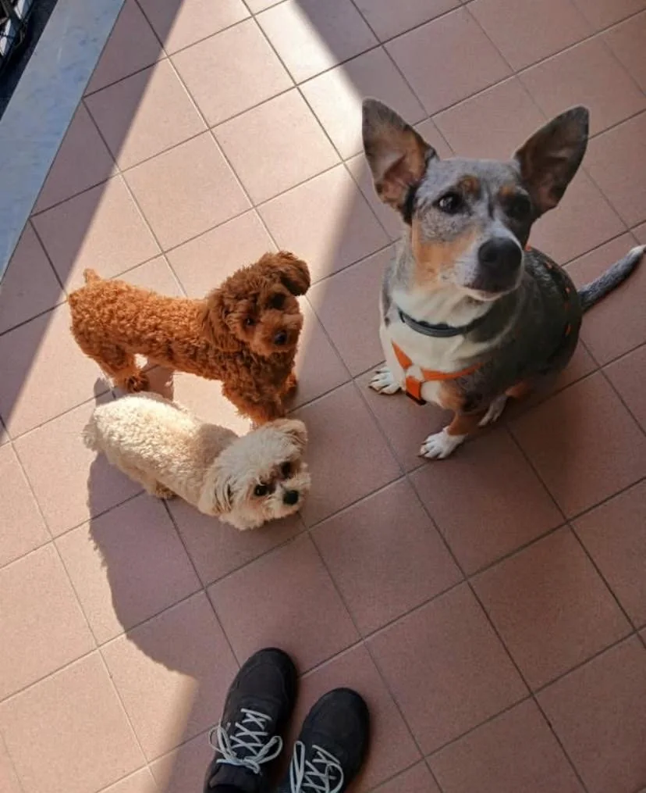
03
A domicilio
La possibilità viene verificata in base alla zona e al tipo di richiesta.
Dettagli →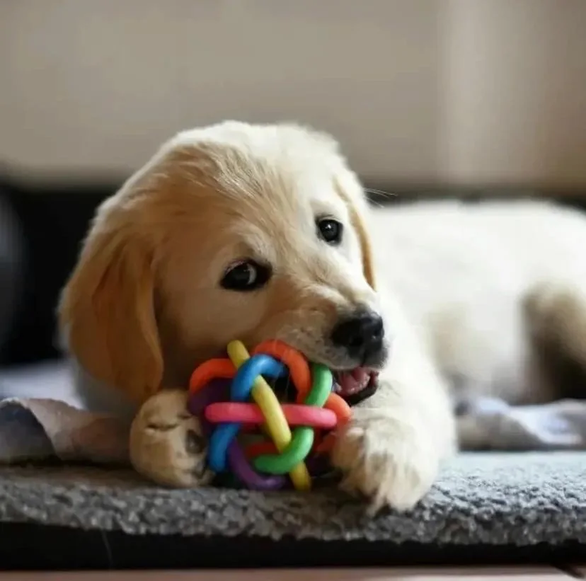
04
Online
Una modalità disponibile quando coerente con il bisogno del binomio.
Dettagli →Aggiornamenti
In agenda | Percorsi di Relazione
Bacheca dedicata agli aggiornamenti su classi di comunicazione, attività in natura, eventi e disponibilità. Per informazioni o prenotazioni scrivi in privato.
Apri l’agenda aggiornata Consulta le prossime date, le attività e le disponibilità pubblicate da Valentina.
Domande frequenti
Prima di iniziare.
Le risposte aiutano a orientarsi. Per capire quale proposta sia più adatta, il modo migliore resta un primo contatto diretto.
Qual è il primo passo?
Scrivi a Valentina indicando età del cane, contesto, zona e motivo del contatto. Il messaggio WhatsApp è già impostato come traccia, ma puoi modificarlo liberamente.
Come scelgo tra percorso individuale e attività di gruppo?
Non è necessario deciderlo prima. La proposta viene valutata dopo aver raccolto le informazioni utili.
Lavori anche a domicilio?
Sì, quando la zona, la disponibilità e la natura della richiesta lo consentono.
È possibile lavorare online?
Sì, anche fuori dalla Liguria, quando il confronto a distanza è adeguato.
Come vengono comunicate date e disponibilità?
Direttamente e attraverso il gruppo WhatsApp “In agenda | Percorsi di Relazione”.
Contatti
Raccontami da dove partite.
Nel primo messaggio puoi indicare età del cane, contesto, zona e ciò che vorresti comprendere o affrontare.
Segui Valentina